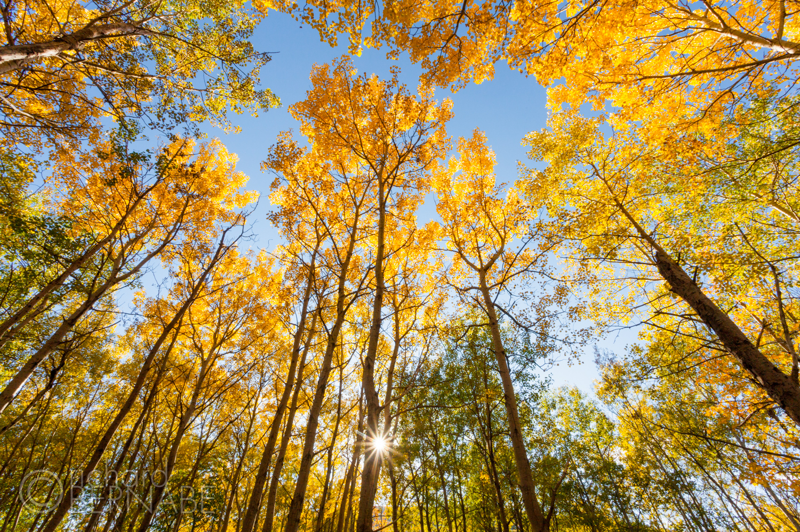
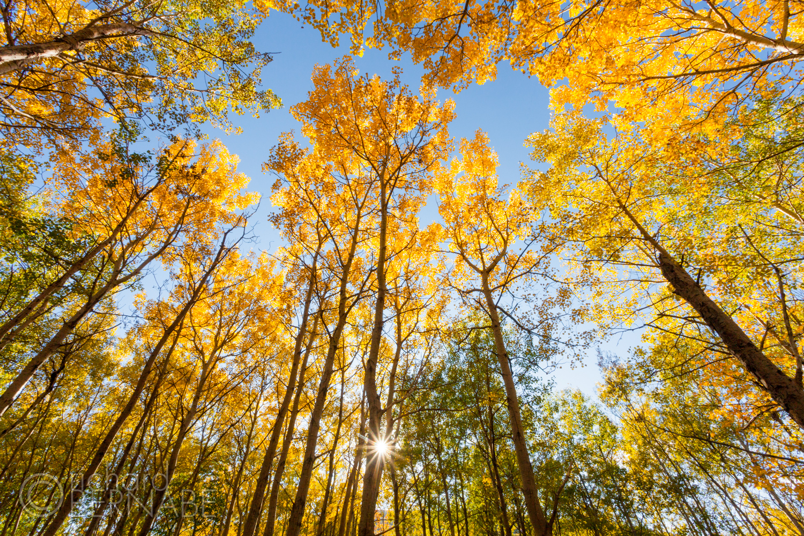

How To Photograph Stunning Autumn Color
by Steve | may 1,2022
Five Essential Photography Tips for Autumn Color
Autumn color season is one of the most eagerly anticipated times of the year for restless nature photographers. The brilliant red, orange, and yellow foliage is like a jarring wake up call for all the creative energy atrophied by the listless and drab dog days of late summer (August through mid- September has always been my least favorite time of year). And since these photos aren’t going to just take themselves, here are 5 essential tips to help you make the most of the autumn color season.
Polarize
A polarizing filter removes glare from almost any non-metallic surface, which includes autumn leaves. Leaves have a waxy coating and they produce glare when viewed from certain angles. A polarizing filter makes fall color look more colorful and saturated but in reality, it’s only allowing you to see the color that’s already there. Wet leaves create even more glare so during rainy conditions, a polarizing filter is nearly essential.
When working near water, a polarizing filter will also remove glare and refections from the water’s surface and surounding west rocks. It will cut glare from water vapor and particulates in the air as well, making blue skies darker and richer in color. The direction of maximum polarization occurs at 90-degree angles from the sun, while no polarization occurs when shooting directly at or away from the sun. Therefore, no polarizer is necessary when photographing sunrises or sunsets.
Get a screw-in polarizing filter for your lens with the largest front element size, then step-up rings for those smaller lenses. Step-up rings are much more cost effective than a polarizer for each lens. Some recommended polarizing filters (links to Amazon).
Use Backlight
The leaves of autumn foliage are translucent, which means sunlight is allowed to partially pass through them when viewed or photographed from the opposite side. The foliage seems to glow and radiate the boldest colors when this happens. Seek out as many of these lighting opportunities as possible for stunning, luminous color. This will work anytime there is direct sunlight. Even when most photographers retire during the “idle light” of midday, you can always aim the lens skyward as the canopy of yellows and reds glow against the complementary crisp blue sky. Stop the lens down to f/22 for a sun star to add additional interest.
Use Telephoto Lenses to Isolate
You should look to use a short telephoto lens (70-200mm or even 100-400mm) to isolate patterns of autumn color, interconnected shapes, and textures within the larger landscape. A forest of trees, colorful or not, can be a confusing maze of visual chaos. But by isolating smaller vignettes with a telephoto lens, you can help bring some order to that chaos. Telephoto isolation in landscape photography is the fine art of exclusion, stripping away any extraneous visual elements to reveal only the most essential and important parts of the scene. This is particularly true when shooting autumn color.